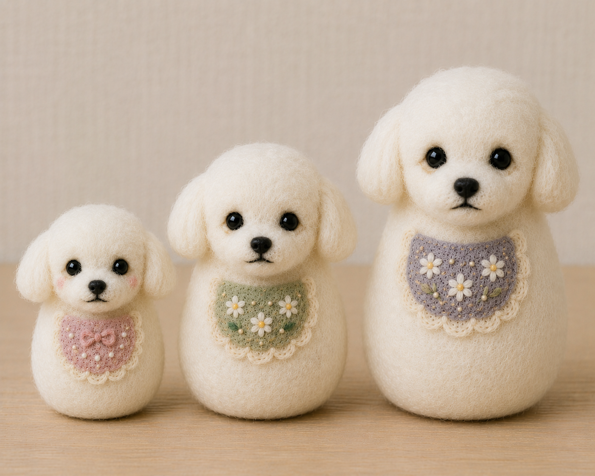
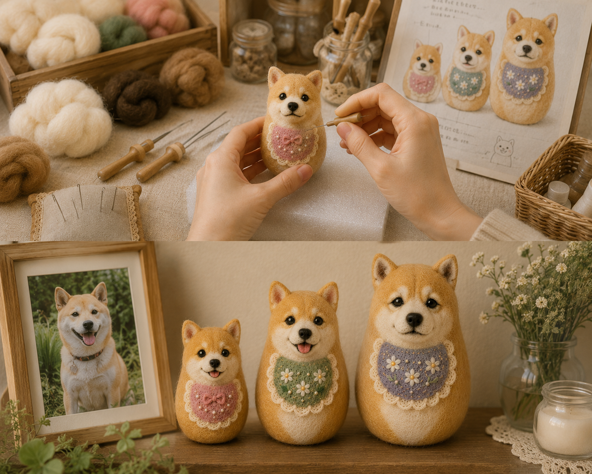
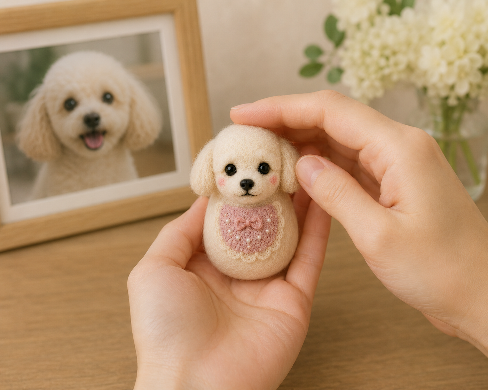
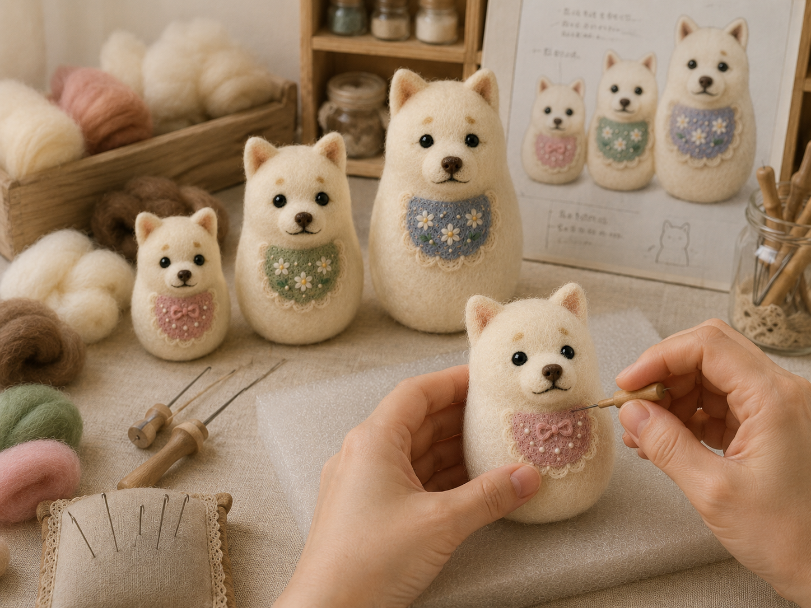
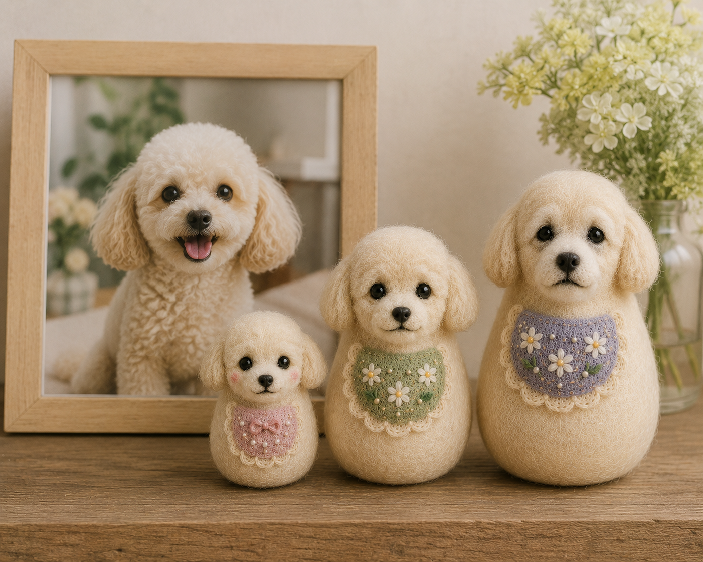
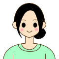
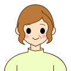
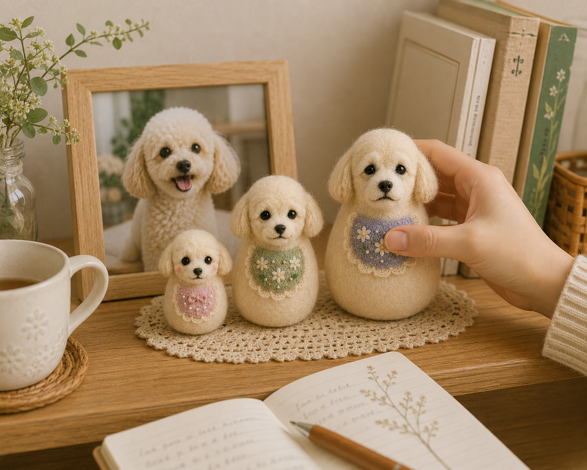
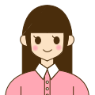

あの子の成長を、
そっとかさねて飾る。
パピー期、成犬期、シニア期。
愛犬の成長を３つの姿で残す、
ふわふわ羊毛フェルトの
オーダーメイドマトリョーシカ。

こんなお悩みありませんか？
うちの子らしい
表情や毛色まで
再現された
特別な記念品が
ほしい
写真だけでは
あの子の
ぬくもりまで
残せない気がする
パピーの頃から
今までの成長を
ひとつの形で
飾りたい
その想いを、かさねで形に。
今そばにいる子にも、虹の橋を渡った子にも。

かさねは、愛犬の
パピー期、成犬期、シニア期を
3つの姿で再現する、
オーダーメイドの羊毛フェルト
マトリョーシカです。
愛犬の写真をもとに、
毛色や模様、表情の特徴まで
ひとつずつ制作。
成長の思い出を、飾って、開いて、
そっと撫でられる
立体作品として残せます。
かさねの特徴

1ふわふわ撫でられる思い出
羊毛フェルトならではの
やわらかさで、
写真とは違う
ぬくもりを感じられる。

2うちの子らしさを再現
写真をもとに、
毛色・模様・表情を
オーダーメイドで制作。

3成長を3つの姿で残せる
パピー期、成犬期、シニア期を
マトリョーシカの
入れ子構造で表現。
制作例
様々な犬種、毛色、模様に対応！
お客様の声
30代女性 / トイプードル

毛色や模様の特徴まで
丁寧に再現されていて、
うちの子らしさを感じます。
40代女性 / 柴犬

虹の橋を渡った子を
そっと手元に置ける形で
残せてよかったです。
50代女性 / ミニチュアダックス
料金プラン
愛犬の特徴や残したい思い出に合わせて、
3つのプランをご用意しました。
毛色や模様、小物の再現に応じてお選びいただけます。
かさね
Mini
￥18,000~
- 3体セット
- シンプルな毛色・模様の再現
- 手のひらサイズ
- 写真3〜5枚から制作
おすすめ！
かさね
Standard
￥28,000~
- 3体セット
- 毛色・模様の再現
- 手のひらサイズ
- 首輪やチャームなど小物1点まで対応
- 写真5〜10枚から制作
- 専用ミニ台座つき
かさね
Premium
￥42,000~
- 3体セット
- より細かな毛色・模様の再現
- 手のひらサイズ
- 小物2〜3点対応
- 名前入り台座
- 制作前ラフ確認あり
- ギフトボックスあり

FAQ
はい、可能です。現在の姿はもちろん、パピー期のお写真などをもとに、成長の思い出を3つの姿で制作できます。
プランによって異なりますが、3〜10枚程度あると、毛色や模様、表情の特徴を再現しやすくなります。
はい、制作可能です。残っているお写真や現在の特徴を参考にしながら、パピー期らしい雰囲気で制作します。
やさしく触れていただくことはできます。ただし羊毛フェルト作品のため、強く引っ張ったりこすったりしないようご注意ください。
ご注文内容にもよりますが、通常はお写真確認後、約1〜2か月ほどお時間をいただきます。

写真だけでは残せなかった
パピーの頃の姿まで
形にできて嬉しいです。